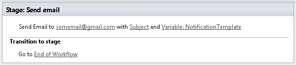
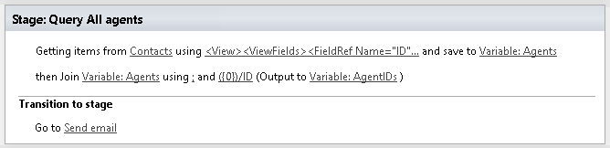
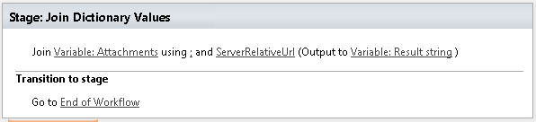

Workflows customization¶
Plumsail HelpDesk uses workflows for notifications, but you can add your own workflows to extend HelpDesk functionality.
We use triggers and workflow scheduler to start workflows on specific events or at set time periods.
SharePoint workflow actions¶
You can use any out of the box workflow action in your workflows, but there is also a set of HelpDesk specific workflow actions:
- Send Email
- Get Items by Query
- Join Dictionary values
HelpDesk uses them to send notifications, query information about tickets and join multiple values to single string.
If you use SharePoint 2013 workflows and need more workflow actions you can take a look at one of our other products Workflow Actions Pack.
Send Email¶
Sends an email message using HelpDesk’s email settings:
Some properties of this workflow action support tokens (See description). You can use context tokens to access the current list item, ticket or the site context. Examples of tokens:
{{CurrentItem.Title}}
{{CurrentItem.From.Title}}
{{Ticket.AssignedTo.Email}}
{{Context.SiteUrl}}
Syntax of context tokens is described in the documentation for message templates.
Input parameters¶
| Parameter | Description | Examples |
|---|---|---|
| To | E-mail of the recipient. (Context tokens can be used here). | SomeUser@gmail.com
{{Ticket.AssignedTo.Email}}
{{Ticket.Requester.ID}}
{{Ticket.Cc.ID}}
|
| Subject | Subject of the message. (Context tokens can be used here). | SharePoint notification Ticket #{{Ticket.ID}}
|
| Body | Body of the message (May contain HTML). (Context tokens can be used here). | Hello, Mr. N.!
{{Ticket.Title}}
|
| Attachments Urls | URLs of attachments delimited by ‘;’ | /somefolder/sometxt.txt; http://somesite.com/images/someimage.img
|
| Except Recepients | Contacts that will be excluded from the list of recipients. (Context tokens can be used here). | {{CurrentItem.From.ID}}
|
| Template Data | Dictionary with additional data. You can put here some object and use it during rendering.
It accepts Dictionary or String variable formatted as JSON object. So, we can send information about
modified ticket fields. This data is the source denoted by the {{Data}} context token.
See context tokens for more information. You can use this data inside the body template. |
{
FieldChanges: [
{
FieldInternalName: "Status",
BeforeValue: "New",
AfterValue: "Solved"
},
{
FieldInternalName: "Cathegory",
BeforeValue: "Question",
AfterValue: "Problem"
}
]
}
|
| Throw Error | In case of an exception terminate the workflow and rethrow the exception? | Yes/No
|
Example¶

Get Items by Query¶
Executes CAML query on a list or on a document library list and returns a collection of elements. Read this article to learn how to query items using this workflow action. We would recommend to read the whole article to understand how to work with dictionaries in general, but you can also just read the section related to this workflow action.
Output parameters¶
| Parameter | Description | Example |
|---|---|---|
| Items | The output variable that results will be saved into | Variable:Items
|
| Count Items | Contains the count of items in the result | Variable:CountItems
|
Input parameters¶
| Parameter | Description | Example |
|---|---|---|
| Folder URL | Specify the server relative URL of a list folder from which results will be returned | /SiteUrl/Lists/ListName/ Folder1/SubFolder
|
| Sort by | Obtained items will be sorted by the field with this internal name | Created
|
| Group by | Obtained items will be grouped by the field with this internal name | Requester
|
| Throw Error | In case of an exception terminate the workflow and rethrow the exception? | Yes/No
|
| List URL | List for querying. The value could be the list name, GUID or the list URL. | Documents
|
| Caml Query | CAML query to be executed | <View Scope="RecursiveAll">
<Query>
<Where>
<Contains>
<FieldRef Name="FileLeafRef" />
<Value Type="Text">Contract</Value>
</Contains>
</Where>
</Query>
<ViewFields>
<FieldRef Name="FileRef"/>
<FieldRef Name="FileLeafRef"/>
</ViewFields>
</View>
|
Example¶

Join Dictionary Values¶
Concatenate the values of dictionary into a single string
Output parameters¶
| Parameter | Description | Example |
|---|---|---|
| Result string | String value will contain the result of the operation | /lib1/Order1.docx;/lib2/Order2.docx
|
Input parameters¶
| Parameter | Description | Example |
|---|---|---|
| Source dictionary | Data source (must be of dictionary type or string formatted as JSON) | Variable:Attachments
|
| Separator | Separator that will be used for string concatenation | ‘;’ or any of symbols or string
|
| Path | Key containing a select statement or a pathname | ServerRelativeUrl
|
Example¶
